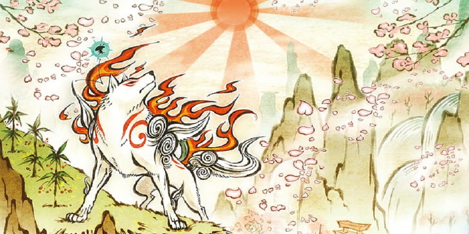

Okami - Run Any%
Heavenly Stream
Após a cutscene de introdução ao jogo, entre na caverna iluminada na arvore, lá você encontrará um dos paineis que você utiliza para salvar o seu progresso, utiliza-los é a unica forma de salvar o jogo em Okami, com excessão a alguns chefes onde você verá um portao amarelo, que também salva o jogo ao atravessa-lo. Aproveite e quebre os vasos para se acostumar aos controles, em seguida siga pela direita da colina, suba nela e abra o baú e observe Issun consertando a ponte. Atravesse-a, suba o morro e crie a última estrela com seu pincel para completar a constelação e conseguir seu primeiro pincel celestial, Rejuvenation, de Yomigami, o Deus do Rejuvenescimento. Com ele Amaterasu poderá completar/consertar objetos por meio do seu pincel.

Volte em direção ao lago e desenha a 'água flutuante' para completar o caminho para o outro lá e vá nadando pelo lago estrelar e abra o baú do outro lado e entre na outra passagem. Continue andando e pouco antes do atravessar a primeira ponte a direita ao lado da pedra tem um baú para você abrir. Siga em frente até encontrar um portão que se fechará atrás de você, procure por vasos no local e vá até a estatua para consertar sua espada com o pincel celestial, fazendo isso aparecerá outra constelação para Amaterasu completar e pegar um novo pincel celestial Power Slash , de Tachigami, o Deus do Corte. Com ele Amaterasu poderá cortar objetos e inimigos.

Com o novo pincel, quebre o portão e o atravesse. Ao descer as escadas, seremos introduzidos a primeira luta do jogo. Por enquanto só temos 1 dos 15 instrumentos divinos do jogo, o o refletor ('escudo') inicial do jogo, Divine Retribution, e nenhuma Glaive (espada) nem Rosario (chicote). Alem dos instrumentos divinos, os pinceis também podem ser utilizados em batalhas. Bata nos inimigos com o refletor e/ou use o pincel para fazer um corte nele e causar dano. Utilizar o pincel e cortar um inimigo quando ele está sem HP e quase desaparecendo, fará ele dropar uma Demon Fang, colete o maximo que puder delas, juntamente a dinheiro, eles serão importantes ao decorrer do jogo. Terminar as lutas em pouco tempo e sofrendo poucos golpes te dará um bonus de dinheiro. Siga em frente derrotando todos os inimigos que aparecerem, e saia da caverna e corte a fruta na árvore. Siga para a vila abaixo.
Kamiki Village
Converse com todas as pessoas na vila. Em um certo momento, uma seta aparecerá o guiando para o alto de um morro. Chegando lá, você usará o pincel celestial proprio da Deusa Amaterasu, a deusa do Sol, assim desenhando um sol no céu e transformando a noite em dia, esse é o poder de seu pincel proprio, o Sunrise. Converse com o velho Senhor Laranja e derrote os inimigos que aparecerão. Desça o morro e, caso tenha comida, alimente os pardais que você encontrar. Alimentar os animais é uma das formas de conseguir o equivalente ao EXP nesse jogo, com eles, no menu de pause você pode aumentar sua barra de HP, a quantidade de potes de tinta que carrega, o nivel do Astral Pounch (uma especie de reviver) e a capacidade maxima do seu saco de dinheiro. Por isso, sempre que encontrar um vendedor, como o que tem em Kamiki, use seu dinheiro para comprar um pouco de todos os tipos de comidas, instrumentos divinos e outros itens que achar necessario.
Desça até a vila até encontrar a horta e mais alguns pardais. Cave e pegue todos os rabanetes sem que a mãe de Mushi te bata, e dê o ultimo rabanete dê para o garoto e comprove ter batido o recorde de seu cão. Alimente o cão de Mushi caso tenha comida. Em seguide, conserte a roda d’agua. No lago ao fundo tem um baú no fundo do lago e de baixo da ponte, corte-os com a Power Slash para abri-los. Siga em direção Passe pela trilha e converse com o mercador depois da ponte. Elimine os inimigos e alimente os coelhos que aparecerão e entre na casa. Passe pelo buraco e dê uma cabeçada em Susano para acorda-lo. Siga com ele até o mercador depois da ponte e compre os itens que achar necessario. Entre na casa do moinho e converse com a Kushi. Pegue o Sake e volte para atrás da casa do Susano e dê o Sake a ele. Corte os objetos com ele e entre no caminho, cortando a enorme pedra.
Hanasaki Valley
Explore o lugar até chegar na festinha dos yokais, derrote-os e siga com cuidado com as árvores e entre na caverna. Siga em frente e elimine os inimigos que aparecerem. Desenhe um sol na parede e siga Susano. Destrua o portão e com a ajuda de Susano, corte as luminárias de madeira e acorde o urso. Pegue a bola de cristal e coloque-a na água, na sala anterior. Vire para a cachoeira, desenhe um sol e complete a constelação para conseguir um novo pincel celestial Bloom de Sakigami, um dos 3 deuses da Flora. Com o novo poder, Amaterasu pode re-florecerer arvores e terrenos mortos. Use o novo pincel e desenhe um círculo no alto da árvore pra florescer a cerejeira.

Agora volte seu caminho e use o novo pincel celestial e agora você vai poder derrotar as arvores amaldiçoadas que te atacam. Para derrotar elas basta cortar a bola quando a mesma estiver vindo em sua direção, e depois que a arvore tiver tonta, floresça ela com o pincel celestial. Mais abaixo você encontrará uma plantação podre, purifique o local também com o pincel celestival de florescer, fazendo nascer novas flores. Seguindo em frente pule na parede e cave pela luz verde e aparecerá um trevo, o floresça e continue descendo e florindo o resto do local. Do outro lado do riacho tem um baú atrás da pedra e um trevo na outra ponta. Siga em frente até sair do local pelo "portal" na caverna.
Shinshuu Plain
Converse com o lenhador e vá para a grande árvore de cerejeira, a floresça para liberar o mapa de Shinshuu Plain. Um pouco a esqueda da arvore tem um mercador. Em frente a cerejeira tem uma área podre, purifique-a e alimente os javalis. Um pouco afastado ao leste da cerejeira tem um Portão de Demônios, entre lá e derrote os inimigos para purificar essa area. Siga em direção ao círculo à esquerda do mapa. Ao chegar lá, elimine o inimigo novo e abra o baú em frente da casa e entre quando estiver de noite. Converse com o Tama e faça o desenho de uma bomba parecido com o da parede ao fundo assim que ele jogar as bombinhas na bacia. Complete a constelação para ganhar um novo pincel celestial, o Cherry Bomb de Bakugami, o deus da pirotecnia.

Siga para a frente da casa e exploda a rachadura com a Cherry Bomb. Abra o baú, passe pela ponte e desça para a praia e entre no Templo e converse com o monge, ele vai te dar um contrato pra matar yokais que só podem ser encontrados de noite. Ao sair, você já encontrará quando sair enfrentará um deles. Após derrota-lo, entre na passagem ao lado e depois saia, siga em frente e mais à esquerda tem 2 cerejeiras e um baú no meio das moitas. Vá para o círculo vermelho que está em seu mapa e cheque a placa que terá no local, depois procure pelo Dojo do Mestre Onigiri. Converse com ele e treine, com isso você irá ganhar novas habilidades, mas é preciso pagar para aprende-las. Terminando tudo, volte para Kamiki.

Kamiki Village Act 02
Converse com o Mr. Orange topo da colina e floresça todas as árvores da vila. Terminando de florescer todas elas, fale com ele novamente e ele vai tomar uma bebida e começar a dançar. Circule as flores que ele apontar e complete outra constelação para conseguir mais um pincel celestial, o Water Lily de Hasugami, um dos deuses da Flora. Volte para Shinshuu Plain e vá até a caverna aquatica, desenhe pequenos círculos na água do rio e use as vitorias regias que você criar na agua para levar Amaterasu ao final do corredor de agua em terra firme. Exploda a passagem com a Cherry Bomb e a atravesse.
Agatha Forest
Desça o morrinho a frente de onde você está, passe pela caverna e entre na casa que está lá, então converse com a vidente e compre uma previsão do futuro dela. Volte para a entrada da caverna e siga pelo caminho ao lado da escada. Passe pela caverna e destrua outra rachadura. Floresça a árvore e pegue o rosario que está dentro do baú, as Devoult Beads. Saia da caverna e prepare-se para lutar com o primeiro boss do jogo, Waka (ou Ushiwaka).

Após derrotar Waka, procure e converse com o garoto Kokari, depois da conversa, ele vai começar a chorar, dê uma cabeçada nele e comece o mini-game de pesca, não deixe a linha chegar no vermelho, caso aconteça ela vai arrebentar, continue assim até que apareça um comando na tela e corte o peixe com o pincel. Fique pescando até pegar o peixe salmão gigante, que irá cuspir uma chave para você. Siga para o círculo vermelho no mapa e abra o portal com a chave.
Tsuta Ruins
Floresça as árvores do local e passe pela porta automática, indo a uma sala onde a agua não está contaminada. Crie vitorias regias na água para chegar à ilha. Passe pela outra porta automática e siga pela esquerda. Suba o caminho até chegar a uma luz, crie mais plantas na água e suba a parede. Passe pela bola e elimine o inimigo novo. Leve a bola para o buraco e quebre as estátuas. Passe pela porta, elimine os inimigos e destrua o portão de madeira, floresça a flor e desenhe um sol no céu. Suba o local usando os cogumelos e exploda a rachadura, depois passe por mais duas portas automáticas e siga em frente enquanto toma cuidado para não cair quando o chão se romper. Siga para a porta trancada e pule para baixo, converse com a porta e a ataque com uma cabeçada, e sem seguida use o pincel nos pontos brilhantes na mesma ordem que eles apareceram para destruir a porta e pegar a chave. Abra o cadeado no centro da sala e utilize os troncos. Suba na parede à direita e pegue os itens e depois siga em frente e elimine os inimigos. Circule a fruta e siga até a ponte. Salve o jogo, siga a esquerda desse ponto passe pela porta e floresça as plantas. Lute para purificar os três locais e faça um sol no céu. Suba pelo cogumelo e siga em frente. Quebre os vasos e abra o baú. Desça e crie plantas para passar. Entre na passagem dentro da cachoeira, saia para a esquerda da cachoeira e siga o rio. Quando cair, siga até a parte marcada no mapa. Cure os gramados e complete a constelação para ganhar um novo pincel celestival, o Vine do ultimo dos Deuses da Flora, Tsutagami. Suba usando o novo poder fazendo vinhas nas flores flutuantes e passe pela porta e suba pelo caminho da direita, suba usando as outras flores e chegue ao topo da enorme pedra. Ligue as quatro flores nos quatro ganchos, caia no buraco, quebre as estátuas e salve o jogo, passe pelo portal e prepare-se para a batalha contra o boss, a Spider Queen. Para derrota-la, use o Vine para ligar os ganchos em suas costas as flores flutantes até que ela fique presa e se abra, quando isso acontecer, destrua as flores em formato de olho dentro dela.

Ao derrotar a Spider Queen, Amaterasu ganhará um novo refletor, as Snarling Beasts. Siga para o rio de Agata Forest e no caminho alimente os pardais e encontre o menino. Ligue os ganchos nas flores que estarão nas margens, abra o baú e aproveite para alimentar os animais na região e fazer as side-quests de Agatha Forest se quiser. Terminando, vá para Taka Pass.
Taka Pass
Converse com os mercadores para comprar itens, quebre a rachadura que encontrar a frente, pegue os itens e prepare-se para enfrentar o Waka novamente. Depois da luta, passe pelo caminho e chegue a um local aberto. Floresça as árvores no local e desenhe o que falta na ponte e após isso floreie a enorme cerejeira. Nesse lugar há 2 templos de demonios para purificar e uma side-quest com toupeiras, complete todas elas se quiser e depois siga para Kusa Village
Kusa Village
Vá no mercador e compre a arma cata-vento, esse item é pra você dar ao pro mercador de chá no começo de Taka Pass. Esse mercador também venderá um item chamado Gold Dust, o qual serve para aumentar o dano de um artefato a sua escolha de forma permanente. Após isso vá até a saida ao sul, explore o local e encontre-se com seu amigo no caminho à esquerda do poço. Volte e siga em frente. Fale com a Princesa Fuse e exorcize o yokai dela. Pegue seu pincel dele e corte os baús dentro d´água. Entre e converse com a Princesa Fuse novamente, atravesse a ponte e suba nas flores até o topo de converse com o morador e continue em frente na ponte estreita. Se você não tiver com carne, compre no mercador na entrada da fase, pois você deverá procurar 5 cachorros e dar carne a eles. O sensor alertará quando estiver se aproximando de um deles. Explore o local e os encontre nesses lugares:
1. Perto de seu amigo, suba a escada depois dele e arrebente a parede e ali vai está o Komuso pra outro desafio pra você
2. Siga para o final do caminho onde o Susano está deitado e corte o bambu iluminado do lado da casa, inclusive converse com o Mr.Bamboo
3. Revitalize o chão podre ao lado do poço e uma garota.
4. Suba à esquerda do poço, pule para a flor do lado da escada, passe pelo andaime e procure no final da caverna
Para encontrar o ultimo cão, volte para onde você exorcizou a Princesa, você deverá atacar o cão com bombas e ele é mais forte que os outros. Após derrota-lo, converse com a princesa e saia para o Hotel da Vila no térreo, pinte o olho da estátua de boa sorte e suba e converse com a Haruka e ela vai dar um outro contrato pra caçar yokais. Saia da vila e volte para Taka Pass. Quando anoitecer, suba no telhado da casa à direita do rio. Faça um buraco com uma bomba e entre. Converse com a velha e arraste ela até a luz. Enfrente-a e siga a passarinha que você resgatou até Sasa Sanctuary.
Sasa Sanctuary
Chegando em Sasa Sanctuary, o chefe do local irá te permitir de entrar lá por ter resgatado sua filha. Entre dentro da casa e suba, explore o spa e encontre um boneco na mesma sala que o mercador. Desenhe o olho que falta e converse com o mercador, depois suba o elevador e converse com o dono e abra os 8 baús. Volte para a entrada e siga pela direita. Lá fora, converse com Bath e com Mr. Bamboo, entre no mini-game e use seus pinceis, cave e/ou dê cabeçadas para destruir as pedras e abrir caminho até o solo, mas evite os espinhos. Espere o Mr.Bamboo achar o chão brilhante e cave ele, assim você poderá completar outra constelação e pegar o pincel celestial Waterspout da Nuregami, a deusa das Águas.

Use o pincel celestial na agua para e o arraste até Bath para jogar agua nele e apagar o fogo. Faça um risco na vertical do lago para o céu, converse com o velho e ligue a água ao bambu. Passe pela porta e escave a caixa. Converse com Tai e Gi, assim você encontrará mais cachorros e precisará sair em busca dos que faltam. Siga em frente e corte um dos bambus no momento em que piscar. Desenhe bombas no inimigo e vença-o, depois o alimente com carne e volte para onde está o Mr.Bamboo. Converse com ele e use o item que ganhar no redemoinho, em seguida, siga em direção aos círculos vermelhos no seu mapa a procura dos cães.
Siga para o lago e apague os baús em chamas e abra-os dentro da caverna da vidente. Use seu poder de agua pra criar uma torrente de agua no laguinho, suba e abra o baú, depois vá para a parte oeste no mapa. Encontre o mercador e suba a rampa. Converse com a Kushi e encha o balde com a água do lago utilizando seu poder, assim, ajude Susano a derrotar os inimigos. Volte pro mesmo local ond você encontrou o Kokari e pescou com ele, pois você irá pescar com ele novamente. Pegue alguns peixes até conseguir pegar o Whopper, complete a constelação que irá aparecer e ganhe o pincel celestial Crescent, da Yumigami, a deusa da Lua. Esse pincel tem o mesmo poder do Sunrise de Amaterasu, porem, fazendo uma lua e trazendo a noite.

Dessa forma, volte para Kamiki, caso esteja de dia, use o Crescent para anoitecer e converse com Mushi e seu cachorro, o vencendo e então recuperando todos os Canine Warriors. Agora retorne a Kusa Village e converse com a princesa dentro de sua casa. Siga pelo caminho atrás desa casa, após isso entre na caverna.
Gale Shrine
Encontre Susano e siga em frente, depois converse com Yatsufusa e entregue os selos para ele, passe pelo lago, derrote os inimigos e pegue a chave, assim use-a para abrir o cadeado. Coloque uma bomba no elevador, mas sem entrar nele, o fazendo se mover, após isso pule e caia no buraco e abra os 4 baús. Coloque uma bomba no meio, elimine o inimigo acima. Pegue a chave e caia para o andar de baixo. Exploda duas bombas em sequencia para chegar ao 3 andar. Explore o local, suba as escadas e passe pelo portão. Inverta o curso dos ventos fazendo um desenho em sentido contrário, complete a constelação e pegue o pincel celestial Galestorm de Kazegami, a deusa dos ventos.

Com o novo pincel, desenhe um vento no moinho pequeno e pule na plataforma acima da escada pra pegar outro baú. Apague o fogo das caixas com o vento e caia pelo elevador, em seguida, faça uma ventania entre os dois moinhos do primeiro pavimento e suba nas vigas. Utilize as flores como plataforma e faça ventos para que os panos também sirvam de plataforma. Passe rapidamente por eles e chegue na última viga. Apague o fogo do caminho e passe, prepare-se para enfrentar o boss Crimson Helm. Use o vento para apagar seu fogo antes de ataca-lo.

Após derrotar Crimson Helm, desça da casa da Princesa Fuse e vá pela passarela de madeira, suba na flor e prossiga até chegar em varias bandeiras, use o vento para transforma-las em plataformas e pule neles até chegar do outro lado e pegar os 2 baus e tem galinhas. Caia daí mesmo e use o vento no moinho do poço e converse com a menina do jardim, caso esteja de noite, use o pincel celestial para deixar de dia, e ai converse com ela. Depois disso vá pra Taka Pass pra pegar atalho do redemoinho. Caso queira, pode aproveitar esse momento para pegar os itens e fazer as side-quests ainda não feitas em Taka Pass e Sasa Sanctuary. Após isso, retorne a Kamiki Village, mas certifique-se de salvar o jogo antes de entrar na vila.
Kamiki Village Act 03
Chegando em Kamiki, assista a cutscene que vai aparecer e após isso, caso queira, procure pelos baús ainda não pegos. Em seguida, vá para a saida de Kamiki, converse com Kushi e junto dela, vá para a Moon Cave
Moon Cave
Suba a escada, pule e desça a rampa, lá você encontrará um baú na outra elevação e mais ao fundo vai ter um portão de demônios, elimine-os e pegue a máscara que eles vão dropar. Desenhe qualquer coisa que queira nela e vá até os guardas-oni, converse com eles e eles te liberarão para atravessar o portão.

Entre e siga pela direita e ligue as flores nos ganchos da tampa. Abra, converse com o cozinheiro, pegue a chave e vá atrás dos ingredientes para a sopa. Volte para a sala anterior pelo caminho oposto ao da cozinha. Use a chave no cadeado e entre, passe por cima das flores ligando-se rapidamente a elas, corte o totem com o olho da porta e entre. Purifique o portão de demônios, abra o baú e volte pelas flores. Faça um jato de água na poça ao lado da porta que fechou, e repita a operação na outra poça. Passe pela porta e pela ponte e caia, purifique esse outro portão de demônios na ruína e ligue a água com o bambu. Entre pela tubulação e faça uma outro jato de água que está embaixo. Entre e lute contra os inimigos, depois acerte o poste com o olho e não pule no buraco, mas faça outro jato de agua na poça do local e suba. Siga pela plataforma central e ataque o cara da manivela até que ele desça. Continue e elimine os inimigos, depois localize os quatro postes com olhos e corte-os ao mesmo tempo. Examine a estatua congelada, derrote o inimigo e complete outra constelação outro pincel celestial, o Inferno, da Moegami, a deusa do fogo.

Faça uma ligação entre a fenix e o gelo, assim o derretendo e liberando a passagem. Utilize o fogo para derreter outro gelo e exploda a rachadura, entre no buraco, continue em frente e converse com o oni na manivela para subir. Continue até encontrar a ruina e purifique o portão de demônios. Chegue até a cozinha e siga para o local do começo. Pule dentro da flor que está ao lado do sino e impulsione-se para o andar acima, utilize a água e suba ainda mais. Desenhe uma ponte para atravessar e derreta o gelo, depois passe pela porta e purifique outro portão de demônios. Passe pela porta e pegue a chave, volte pela ponte e siga pela esquerda, abrindo o cadeado com a chave. Mais a frente empurre a bola de pedra para perto do poste com o olho, ataque-o e faça vento para que o chão invisível apareça. Após essa ponte invisível, leve a bola até o botão no centro. Volte para o salão anterior onde pegou a chave e derreta os gelos, abra os baús e em seguida siga para a parte arenosa. Encontre o mercador à esquerda, depois da porta, e use as flores ao lado para subir, faça ventos para usar os panos como plataforma. Quando chegar no canhão, acenda-o no momento certo para abrir um rombo na parede do outro lado. Siga para lá, quebre as pedras e elimine os inimigos. Utilize seu poder de vento e leve a bola de fogo até o final do corredor, entre na passagem do alto e purifique outro portão de demônios. Abra o baú e converse com o cozinheiro na cozinha para entregar os igredientes, volte a sala principal e ataque o sino exatamente 8 vezes. Caso queira, pode explorar o local para pegar os itens ainda nao pegos antes de tocar o sino. Após terminar de pegar os itens e tocar o sino, Volte pra ponte e caia, você vera pedras de fogo, suba lá e derreta o gelo e pegue o baú. Fale com o ascensorista, quando plataforma vier, para chegar a um salão, continue pelo caminho e prepare-se para o boss Yamata no Orochi. Quando eles soltarem um rugido e um brilho arco-iris sair das bocas das cabeças de Orochi, use o pincel celestial para embebeda-los com o sake divino que está nas poças do chão. Ao embebedar os oito, o sino na base deles ficará vulneravel, e é ele que mantem Orochi forte. Suba em uma das cabeças e destrua o sino, agora, Orochi está enfraquecido, basta derrotar suas cabeças uma por uma. Deixe-os bebados novamente, e quando estiverem vulneraveis, ataque-os até derrota-los. Após isso, com a ajuda de Suzano, deem o golpe final e o derrotem.

Kamiki Village Act 04
Converse com as pessoas na vila, em especial o Senhor Laranja no morro, e corte a fruta da enorme árvore. Agora siga para Shinshuu Plain, converse com Sakuya e siga para o ponto vermelho no no mapa. Siga pra Taka Pass pelo redemoinho se quiser e siga para a saída oeste.
City Checkpoint
Converse com os arqueiros. Ligue a tocha até a flecha quando ele for atirar. Nesse local tem varios baus e animais para alimentar, inclusive um que é necessario se pendurar com o pincel celestial de vinhas ao maior estilo spider-man. Após pegar todos os itens de City Checkpoint, continue em frente e siga para a próxima fase.
Ryoushima Coast
Siga pela direita, elimine os inimigos e continue em frente. Quebre a rachadura e encha o lago da plataforma com a água abaixo, repita o processo nos outros lagos secos também. Suba e, quando nascer uma árvore, floresça-a e alimente os animais. Agora você ja pode descer do local, a esquerda tem um trevo e um atalho pra casa da vidente em Agata Forest. Converse com o monge, siga ao penhasco e converse com o pescador também. Descendo a rampa tem um mercador para comprar itens, siga em frente e purifique as áreas podres, e corte as conchas na praia, elas s]ao baus. Por ai há outro Dojo do Mestre Onigiri, entre nele e compre a habilidade de pulo duplo, sem ela não podemos prosseguir. Atrás do Dojo tem uma rachadura exploda-a e corte a concha. Estando na terra, suba na plataforma de madeira no penhasco com o pulo duplo e desenhe uma lua e um sol. Siga pela praia em direção ao norte até encontrar um píer, passe pelo portão, elimine o inimigo e a direita purifique outro portão de demônios. Alimente os coelhos na regiao e procure por um coelho pintado, alimente-o e leve pro cara do lado do píer. Há esquerda tem outro portão de demônios para purificar. Vá pro caminho cidade abaixo.
Sei'an City - Commoner's Quarter
Compre todos os itens não consumíveis e armas dos mercadores se tiver dinheiro o suficiente. Procure e converse Naguri, no andaime. Use ventos e jatos de água e faça o velho passar por onde não consegue. Saia da casa nadando e continue pela saída norte do mapa.
Sei'an City - Noble's Quarter
Converse com o monge até você entregar uma das varas de pesca a ele, assim comece a pescar junto dele até conseguir o peixe-espada. Continue seguindo em frente na ponte, converse com Waka, e continue. Entre na casa e converse com a Rao 2 vezes e depois use algum pincel celestial (corte algo ou faça vento), assim a porta dos fundos irá abrir, passe por ela. Atravesse a porta e entre no portal à direita da mansão, converse com os guardas e pegue o objeto à direita e volte para a casa onde acabou de conversar com a Rao, converse com novamente e siga para Ryoushima Coast pela cidade.
Sunken Ship
Suba no local onde desenhou a lua e o sol anteriormente. Desenhe uma lua e observe a água sumindo perto do navio, siga para lá e entre. Quando a Rao aparecer, desenhe uma linha entre os selos e a porta e continue a quest com ela montada em você. Siga o caminho e faça uma linha entre os espíritos e os selos para espantá-los, e tenha cuidado ao abrir os baús do local, alguns são mímicos, basta tacar selos neles para derrota-los. Elimine os inimigos à frente e suba a escada, abra a porta ligando-a com a mulher. Desenhe um sol no céu pelo buraco no teto perto do trevo. Volte assim que o nível da água subir e elimine o tubarão. Use o enorme barril como apoio para chegar à plataforma, suba no canhão e atire desenhando uma bomba atrás dele, faça isso para os três alvos à frente, assim passe pela esquerda e suba a escada no final do corredor. Continue pelo andaime, ache e corte a corda que segura um barril e ande por ele até chegar às correntes. Siga o caminho dos andaimes para voltar à sala onde você desenhou o sol, agora faça uma lua e volte pra área anterior e mate o monstro verde com os barris de espinhos. Prossiga pra sala do canhão, pegue a chave e passe pelo canhão. Desenhe uma linha entre a porta e e os selos para abri-la e saia do navio.
Sei'an City - Noble's Quarter Act 02
Siga para o escritório da Rao e converse com ela. Saia pela porta dos fundos e siga para onde pegou o objeto ao lado dos guardas, depois do portal à direita, você deve passar por aquela rachadura no muro, utilizando um item de encolhimento e ficando do mesmo tamanho que seu companheiro Issun.

Corte a caixa, siga em frente e elimine os inimigos. Quebre a rachadura no buraco ao lado do pé e abra o baú. Siga para o buraco um pouco mais alto e espere até que os pés se aproximem, os use para subir e quebre uma rachadura. Pegue a chave e volte para falar com a pessoa que estava presa em uma cela, a princesa Kaguya. Destrua a rachadura no chão, procure e quebre a rachadura na parede. Passe por ela e corte a corda que segura a moringa, use o pincel celestial para fazer vento e complete a constelação pra um novo pincel celestial, o Veil of Mist da Kasugami, a deusa da cachaça.

Utilize seu novo pincel celestial para deixar o tempo mais lento e passe por debaixo da aranha, elimine os outros inimigos e volte ao local próximo dos pés. Use seu poder novamente e passe pela passagem bloqueada pela vassoura, jogue água dentro do bambu com o pincel e use o Veil of Mist novamente quando ele estiver se movendo. Prossiga a aranha que o leva ao dormitório e elimine mais inimigos. Agora as aranha para chegar às vigas, siga em frente e passe pelas aranhas e logo a frente vai ter outra caixa pro Issun quebrar. Procure pelo buraco e pule nele, você estará na boca de um homem "gigante" (Pois nós é que encolhemos). Corte a amídala dele, desça pela garganta e salve o jogo. Continue até chegar ao estômago e prepare-se para lutar contra o Boss The Plague. Para derrota-lo, espere-o começar a colocar suas espadas para o alto para atira-las, faça um corte em todas elas, as fazendo cairem no chão, então use o Veil of Mist para desacelerar o tempo e comece a bater na espada dourada com vida (pois ela é o verdadeiro The Plague). Repita o processo até vence-lo.
Derrotando o The Plague, siga em frente e liberte Kaguya, salve o jogo e converse com o Imperador e compre itens se quiser, ele é comerciante. Espere a noite cair (ou use o pincel celestial Crescent para isso) e explore o jardim. Saia pelo portão e converse com Kaguya, observe seu mapa e siga para a mansão ao norte. Use o Veil of Mist e passe pelos guardas. Explore o local e suba pelo elevador. mas você não conseguirá passar pela lava. Desça e saia do palácio e entre na sala a esquerda e pegue os baús, vá pra sala do outro lado e coloque um olho na estátua da sorte, passe pelos guardas e vá pra torre do relógio e floresça todas as arvores. Vá em frente e converse com a menina e pegue os 2 baús fora e entre e floresça as arvores, e enfim siga para Sasa Sanctuary onde Kaguya está.
Sasa Sanctuary Act 02
Entre no spa e continue pelo corredor da direita e encontre Kaguya. Siga até o ponto vermelho marcado no mapa e faça o mini game com Kaguya, o terminando você ganhará uma arma que o protege contra o fogo. Com o item equipado, volte para o palácio onde a lava impedia sua passagem.
Sei'an City - Noble's Quarter Act 03
Passe pelos guardas utilizando o pincel celestial Veil of Mist, passe pelo portão principal, converse com a mulher e suba no elevador, agora passe pela lava com o item equipado para poder nadar sem se queimar. Mais à frente, converse com a Imperatriz Himiko até que ela lhe de uma chave. Volte para Ryoushima Coast e siga o caminho da direita, passe pelos guardas e continue.
Sei'an City - Commoner's Quarter Act 02
Use o pincel celestial Crescente para ficar de noite, isso vai facilitar a achar itens e é necessario para as quests. Siga para o restaurante a frente e com os 2 clientes: City Dweller que fala que a esposa foi roubada, e Masu que vai ter de dar outro contrato para matar yokais. Vá a cozinha e converse com o cozinheiro e ele vai ter de pedir um item chamado Golden Mushroom, ele vai ter de ensinar uma técnica nova de fogo chamada Inferno. Saindo dali vão ter uma luminária gigante, transfira o fogo para todas as luminárias da cidade, pois será necessario mais a frente. Também floresça todas as arvores da cidade, isso te poupara tempo para uma quest futura. No caminho converse com o Samurai Dandy ele vai falar que também foi roubado pelo ladrão Hayazo que está aterrorizando a cidade. Vá para o lado esquerdo do mapa após o canal e converse com o fantasma elétrico Raiden, depois entre na casa de trás e fale Blossom, ela vai falar que o pai dela está muito doente, dê o remédio Hebal Medicine para ela e depois bata nele para ele levantar. Saia e entre na casa do estilista a frente, fale com a atendente e com o Mr.Chic, você pode desenhar o que quiser lá. Agora vá para o lado direito do mapa onde você acendeu a última luminária grande do lado do arqueiro, ali vai ter um lago seco, transfira agua do canal para ele e crie e um jato d agua para subir para quartel do Waka converse com os guardas, Abe dirá foi roubado por Hayazo e se você recuperar a máscara dele, ele vai conta o segredo de Waka para você. Caçar o ladrão Hayaso é uma side-quest, então não é obrigatoria para prosseguir, você pode ignora-la se quiser. Caso queira faze-la, desça e ali embaixo vai ter umas rochas ao lado do arqueiro, corte-as e de uma delas você encontrará o ladrão Hayazo, ele vai ter de desafiar para ver se você consegue pegar ele. Lembrando você tem de acertar ele com o poder que aparecer e na ordem que aparecer. No total são 3 corridas para pegar os itens roubados, faça isso até pegar todos os itens roubados dele e devolver para os donos, e lembre-se que você só pode fazer essa side-quest a noite. Em seguida use o Sunrise para ficar dia novamente e converse com a menina que está desenhando no chão e de para ela o pedaço de carvão, ela vai ter de pedir para desenhar uns desenhos dela para o estilista Mr. Chic você tem que desenhar do jeito que aparecer na tela. Siga agora frente para campo de cerejeiras, não se esqueça de ter florido todas as cerejeiras da cidade, incluindo a cerejeira dentro na casa da Mr. Flower e a na cabeça dela. Fazer a quest de florir todas as arvores de Commoner's quarter é essencial para prosseguir no jogo. Converse com Mr. Flower e vocês ão reviver o resto das arvores que estão amaldiçoadas. Siga ela e quando ela parar de fazer o tai shin circule a cerejeira e prossiga para a próxima até isso chegar na cerejeira da casa dela. Agora siga para o píer mais atrás onde você vai fazer um trabalho de taxi pelos canais da cidade para o aprendiz de carpinteiro de Naguri. Coloque uma vitória regia na frente e ele irá subir na mesma e vai ter de guiar para onde tem que ir e no tempo estipulado, para mover a planta basta usar vento e tome cuidado com os redemoinhos. Quando terminar com converse com os 2 e existem mais dessas quests de taxi por toda cidade, mas não são obrigatorias.
North Ryoushima Coast
Converse com o Ushiwaka e Elimine o inimigo novo e passe pela ponte até chegar ao final da trilha. Mais à frente suba o morrinho e converse com o arqueiro e depois coloque a agua da lagoa na flecha e use-a para acertar o fruto seco da cerejeira gigante em uma ilha. Siga em frente até encontrar um portão de demônios e purifique-o, em seguida converse com a menina que vai falar sobre a lenda da Torre do Gato. Converse com os garotos que estão brigando na praia e acerte Urashima para que ele se levante. Siga para a ponta do píer e desenhe um sol no céu, converse nas costas da baleia quando ela aparecer e siga para a ilha com a cerejeira gigante e corte o fruto. Converse com o pescador no píer e fique pescando até conseguir pegar um Marlin. Volte e procure por um restaurante à beira-mar. Entre e converse com o chefe de cozinha. Faça três riscos na horizontal, como na parede ao lado e ganhe um novo poder.
Catcall Tower
Caso não tenha comida de peixe, procure um mercador e compre algumas IMEDIATAMENTE, por precaução, tenha pelo menos 10 em seu inventario (Lembre-se, é comida de peixe, e não peixes que você pesca). Observe o mapa e siga para o ponto brilhante, a ilha do farol. Antes de entrar tem um grupo de gatos. Entre e alimente os 4 gatos, e escale a parede na parte amarela s com cuidado para não cair. Em quase todos os andares tem um gato para a alimentar e em alguns andares tem baú também. Já no topo pegue o baú do lado da piscina e suba as escadas e pegue outro baú. Encontre o gato ao topo e alimente-o com o peixe, se não tiver como alimenta-lo, desça a torre, compre peixe e suba novamente, alimentar esse gato especificamente é necessario para prosseguir a historia. Ao alimenta-lo, aparecerá outra constelação para se completar e você pegará um novo pincel celestial, Catwalk, de Kabegami, a deusa da escalada. Utilize seu pincel e faça um risco do gato até o alto da parede. Escale por ele, pegue o baú e volte para a praia por meio do redemoinho na piscina.

North Ryoushima Coast Act 02
Observe o mapa e siga com o transporte aquatico em frente no Penhasco onde fica uma estatua de gato, utilize a parede de morro com a estátua de gato, faça um risco na parede, escale e elimine os inimigos lá em cima. Converse com o homem e desenhe uma lua e uma estrela no céu fazendo apenas um ponto no céu. Siga para a ponte da parte comprida à esquerda do mapa. Faça ventos na galáxia para ela começar a girar, assim você começará um maremoto no mar. Entre nesse local
Dragoon Palace
Entre no palácio e quebre a rachadura atrás da escada, depois entre em uma sala a esquerda o qual possui uma mercadora caso precise de algum item. Em seguida, suba para o andar de cima e use-o elevador. Converse com a Otohime até que ela te entregue um item. Volte para a entrada do palácio, entre à direita e quebre a rachadura brilhante. Execute o mini game de quebrar blocos novamente, desta vez suba pela direita e caia com a mulher pela esquerda. Ao fim do mini-game, converse com ela algumas vezes e desenhe um espiral sobre o poço, isso vai liberar o famoso Fast Travel para você. Utilizando Mermaid Coins em algum lago com um pequeno redemoinho de agua ao centro, você pode se teleportar para outros lagos com o mesmo esquema. Volte para o palácio e siga pela esquerda da porta principal, e entre dentro da garganta do dragão.
Ja dentro do dragão, sig em frente e elimine os inimigos que aparecerão, depois pegue a chave no meio do rio do lago gástrico e continue para o norte. Use a chave no cadeado, entre e continue. Quando chegar no suco gástrico vermelho, ligue o suco no tumor do teto, alagando a sala, agora volte para a sala anterior usando o pincel celestial Water Lily para criar plataformas por cima da "agua". Ligue o suco ao centro da estrutura e elimine os inimigos que vão aparecer, após isso, corra o mais rapido que puder até a saida, terá uma seta o guiando. Agora retorne ao castelo e converse com Otohime.
Ryoushima Coast Act 02
Siga em direção ao local apontado no mapa, encontre e siga o fantasma de Rao até a caverna, entre no poço e continue andando até chegar ao palacio, atravesse a lava e por precaução salve o seu jogo. Nesse momento, você encontrará a princesa Himiko morta, alem de descobrir que Rao foi a culpada, tudo para ter posse das Fox Rods novamente. Dessa forma, se iniciará uma luta contra ela. Rao possui um HP bem alto e toma pouco dano para os instrumentos, fique atacando ela o maximo que pode, e, quando ela estiver com a guarda baixa (ela ficará cinza), use o pincel celestial para fazer um corte nela, arrancando uma boa quantidade de HP.

Após derrotar Rao, siga até o local apontado no mapa e converse com Otohime, ela o leverá para Oni Island para que continue sua jornada
Oni Island
Um aviso importante sobre esse lugar, é que Oni Island não é retornavel, alem de ser a fase mais longa (e insuportavel) do jogo, então certifique-se de pegar todos os itens antes de deixar o local. Não há nenhuma Stray Bead aqui, então não há nada para se preocupar.
Siga em frente pelo corredor inicial e crie um jato de lava para subir. Ao chegar no enorme lago de lava, caia nele, entre no portao a esquerda e use outro jato de lava para subir, ande pelas beiradas até chegar nos portões. Lute com os inimigos e prossiga. Fale com o mercante e compre itens com ele. Entre no corredor a esquerda, entre na sala aberta, lute com os inimigos e pegue a chave na sala. Volte ao salao principal e abra o cadeado na porta a direita e desça as escadas até encontrar o selo roxo, vença-o nas corridas nas proximas duas salas (utilize o pincel celestial para desacelerar o tempo se necessario) e suba as escadas. Use o Catwalk para escalar a parede com a estatua, passe pelas plataformas e encontre o selo novamente. Vença-o novamente e elimine os inimigos mais à frente. Quando chegar em uma área com lasers azuis e siga o caminho, elimine os inimigos e salve o jogo. Vença o selo novamente e destrua a parede, va para o lado de fora, suba a parede à direita utilizando o Catwalk, pegue a chave e volte. Abra o cadeado, entre passe pelos bambus e pegue o baú. Entre no portal e desenhe a flecha no arco, e então complete a constelação para ganhar um novo pincel celestial, o Thunderstorm de Gekigami, a deusa dos trovões.

Passe pela porta e use o Thunderstorm no dispositivo. Passe pela ponte e continue até o final do corredor, entre pela porta e use eletricidade do teto ao baú de metal. Destrua a rachadura e entre no corredor, pegue a chave elétrica no final dele e siga até o outro corredor. Use eletricidade no dispositivo, entre, elimine os inimigso e siga pelo labirinto, se quiser, pode explorar o local. Agore use a chave na lâmpada no meio da sala e use eletricidade nos baús de metal e entre no portão e ligue a bola com a espada da estátua. Desça a escada e ao ouvir um barulho, corte os olhos na parede. No final do local, faça uma linha entre a bola eletrica e a espada, destrua a rachadura com a Cherry bomb, caia no buraco, vá para trás na passagem secreta e pegue a chave eletrica. Com ela na boca, suba nas plataformas e a use para criar uma corrente eletrica ate a espada e abrir a porta. Derrote os inimigos e passe pelo labirinto para voltar a sala principal. Use a chave na fechadura com a lampada e abra o portão, agora coloque eletricidade na espada que está na estatua e a destrua, liberando uma escadaria. Acerte os 4 olhos da frente com um unico corte do pincel celestial, e, antes deles pararem de ficar vermelhos, use novamente o pincel e corte o ultimo que está mais atras, liberando a porta. Passe pelo puzzle 2-D utilizando a Thunderstorm e a Catwalk e salve o jogo na proxima sala. Continue avançando, derrote os inimigos na sala a esquerda, saia dela e continue o corredor, que no fim possui um cadeado. Vá na mini-escadaria ao lado do laser, pegue a chave e passe pelas plataformas eletricas, e cuidado com a aranha ao fim dela. No final da plataforma, onde der para ver um baú, largue a chave para a plataforma desativar e você cair, pegue a chave de portão que está na sala, exploda a rachadura com a Cherry Bomb, saindo no final do corredor, e abra o cadeado. Suba as escadas, vença a corrida contra o selo, continue subindo e derrote os inimigos na sala. Use o pulo duplo para pular o rio podre e depois escale com a Catwalk desviando dos espinhos, e derrote mais inimigos. Vá para o lado de fora, suba as paredes com o pulo duplo e destrua a porta falante. Vença o selo numa ultima corrida, atravesse a ponte, SALVE o jogo e suba as escadas, pois está na hora de lutar contra o Boss de Oni Island, Ninetails. Quando a Ninetails erguer a Glaive ThunderEdge aos ceus, use raios para carrega-la e assim separar as raposas (que como fã de Fate/Series, irei chamar de Tamamo-Nines), quando separadas, derrote as Nines uma por uma. Quando a Ninetails se unir novamente, ela ficará apenas com as caudas das Nines ainda não derrotadas, apenas repita o processo até vence-la.

No seu mapa aparecerá uma marcação para você seguir para a proxima parte da historia, em Kamui, mas antes de ir, explore Shinshuu Plain se quiser e compre mais habilidades no dojô. Quando estiver pronto, vá até a marcação no mapa.
Kamui
Elimine os inimigos que aparecerão logo de inicio e entre na casa à esquerda, você verá uma pequena cutscene e lutará contra Oki, essa luta possui 2 fases.

Continue e converse com o arqueiro, quando ele lançar a flecha, ligue raio a ela, agora floresça a arvore e libere o mapa por completo. Procure e converse com o Kokari, e se quiser pesque com ele, ao lado tem o último Dojo do Mestre Onigiri, entre caso queira pegar mais habilidades. Do lado da Cerejeira irá enfrentar inimigo novo. Em frente tem um mercador para você comprar itens, caso ainda não tenha todos os instrumentos, recomendo que farme dinheiro para compra-los. Em frente do mercador, tem um portão de demônios, purifique-o e entre na casa para conversar com Wali, ele te dará de dar o último contrato de yokais. Suba a colina e quando chegar na segunda placa caia e pegue o baú e exploda a rachadura na cachoeira congelada. Já dentro tem um tampão de pedra, cave-o e vai revelar um buraco. Entre você enfrentará um Mini-Boss (ele é opcional) chamado Bandit Spider, derrote-o, pegue o baú e saia. Agora o morro e vá para a parte de cima no mapa.
Weep'keer
Siga para a casa mais ao norte e converse com Samickle, ele vai ficar nervoso te expulsar, tente mais uma vez e vá embora da cidade. Uma mulher chamada Kai vai te impedir e convidar pra ir à casa dela, converse com ela e volte a aquela casa. Converse com o idoso Kemu e ele te atacará. Converse mais um pouco com ele até o portão abrir. Entre nele e siga para o proximo mapa.
Kamui (Ezofuji)
Salve o jogo e siga a enorme rampa de gelo a esquerda, até chegar ao topo onde possui um enorme portão e uma casa. Entre na casa e converse com Tuskle, agora volte para entrada de wep'keer e converse com Kai. Vá até o local marcado no mapa, derrote o inimigo e entre em Yoshpet
Yoshpet
Yoshpet é uma trilha com corrida contra o tempo dividida em 3 partes, apenas vá correndo e utilize os pinceis celestiais quando necessario, alem de pegar os relogios que aumentam seu tempo. Em todo fim de trilha sempre tem dois caminhos, o que a placa aponta é a saida, e o caminho contrário sempre tem um baú (alguns contendo Stray Beads). Chegue na área verde com um tronco no meio e umas cerejeiras atrás, e entre no tronco.
Ponc'tan
Salve o jogo, atravesse a primeira ponte e vá no caminho a esqueda para entrar na casa do mercador caso queira comprar itens. Agora vá no caminho da direita para entrar na casa de Miya e conversar com ela, saia da casa e passe pelo ultimo caminho, o do centro, e converse com os guardas na frente de uma casa, use o Veil of Mist para conseguir entrar, fale com Ishaku e saia de Ponc'tan. Você terá uma pequena cutscene com Miya, após isso, vá ate o local indicado no mapa, Inner Yoshpet. O esquema aqui é o mesmo, corra o mais rapido que puder para atravessar a fase antes do tempo terminar, e pegue os itens caso tenha tempo. Ao fim do trajeto, você vai encontrar uma porta de pedra e Issun vai abri-la. Oki vai aparecer e conversar com você, e então, os três atravessam juntos o portal.
Kamiki Village (100 anos no passado)
Esse portão que Amaterasu, Issun e Oki atravessaram era uma especie de portal do tempo, que os levou para 100 anos no passado. Converse com a versão criança de Sakuya e siga para o alto do morro, converse com todo mundo na vila. Agora iga para a casa de Izanagi (onde Suzano mora atualmente), bata nele, converse e enfrente-o. Pegue a roupa da Nami no rio enquanto ela toma banho sem que ela te veja e coloque-a em Izanagi, e agora siga com ele para a Moon Cave.
Shinshuu Plain (100 anos no passado)
Atravesse Shinshuu Plain e vá até a entrada da Moon Cave, lute com os inimigos e tente entrar, uma cutscene onde Nagi acorda (e toma uma surra) vai acontecer antes disso. Suba as escadaria, encontre Oki e com a ajuda dele, derrote A versão de 100 anos no passado de Yamata no Orochi. A luta contra ele é exatamente a mesma coisa que a anterior, nada para se preocupar. Ao fim da luta, Nagi aparecerá em uma cutscene para ajuda-los a finalizar Orochi, desenhe uma lua no céu e depois ajude Nagi a cortar as cabeças de Orochi. Agora assista a cutscene onde Shiranui aparece e se sacrifica para salvar Nagi dos destroços. Agora fuja para o Ezofuji e passe pelos enormes portões no morro, aqueles que no presente não conseguiamos entrar, entrando em Wawku Shrine.
Wawku Shrine
Utilize seu poder de deixar o tempo lento para rebater os tiros dos canhões. Entre e siga até a tocha usando-a para derreter o gelo, depois derreta os dois gelos na balança e leve as duas plantas até a bandeja mais alta. Circule as duas e empurre a bola para fazer vento, passe pela porta e volte à sala anterior, abra o cadeado e entre. Derreta o gelo com o fogo e crie uma plataforma de água, suba nela e depois e escale a parede perto da parte brilhante utilizando a Catwalk. Use os pinceis celestiais novamente para passar pelos canhões e pelas rodas, passe pela porta do outro lado e use o Veil of Mist para desacelerar as engrenagens e conseguir atravessar. Passe pelas aranhas e destrua a rachadura na parede perto das rodas, e entre. Observe as combinações no chão e use o Veil of Mist para desacelerar os olhos, e use o pincel de corte na alavanca para parar o olho, se ele estiver na posiçao certa, vai brilhar em roxo e parar de girar, repita o processo com os 3 olhos, agora complete a última constelação para seu ultimo pincel celestial, Blizzard de Itegami, a deusa do gelo.

Volte para o palácio e use o novo pincel celestial para congelar e subir na aranha à esquerda. Observe o caminho que deverá ser feito até o alto e use o fogo para derreter o gelo do outro lado e ver a flor. Use o Veil of Mist para deixar o tempo lento para passar pelas rodas, ou então congele-as. Siga em frente até chegar a um corredor com pontos brilhantes flutuando. Congele-os para criar plataformas de gelo e atravesse para o outro lado. Utilize o vento para passar pelo corredor de fogo, passe pelos canhões e deixe o tempo lento no corredor com o chão de vidro, passe pelo canhão e continue, agora prepare-se para o Boss Silver Demon Nechku, apenas rebata suas bombas para incapacita-la e poder causar dano. Após derrotar Nechku, pegue a engrenagem e converse com Oki até que o relógio mexa. Salve o jogo e use a engrenagem para passar pela porta. Use os 4 canhões do meio e atire na ilha do outro lado, crie uma ponte de gelo nos pontos brilhantes. Rebata os tiros pelo caminho e derreta o bloco de gelo, agora mpurre a bola e leve-a até a sala usando o vento, usando-a para congelar as rodas. Siga em frente e destrua a rachadura e pegue a chave do lado direito, e se prepare-se para a luta contra Silver Demon Nechku e Golden Demon Lechku. Para derrota-las, acerte seus pontos fracos (Acerte Lechuku com raio quando erguer sua espada, e Nechku quando ela erguer uma bomba), então com a ajuda de Oki acerte uma flecha naquele que você acertou o raio e o derrube, assim cause o maximo de dano possivel. Repita o processo até derrota-las.

Agora chegamos na reta final do jogo. Tudo o que precisamos fazer é entrar pela ponte arco-iris para a Arca de Yamato, enfrentar os ultimos inimigos e finalizar o jogo, porem, fique ciente que, AO ATRAVESSAR A PONTE ARCO-IRIS E ENTRAR NA ARCA DE YAMATO, VOCÊ NÃO PODERÁ VOLTAR MAIS!, então apenas entre quando tiver certeza que terminou tudo o que precisava fazer, após atravessar, apenas com NewGame+ para retornar as outras areas.
Arca de Yamato
Passe pelo arco-íris e entre na arca, converse com o mercador anjo, compre as última armas e o que você quiser, agora enfrente a boss rush de chefes derrotados anteriormente na ordem que preferir (os bosses são: Orochi, Ninetails, Spider Queen, The Plague, Nechku e Lechku). Após derrota-los, siga para a parte central e prepare-se para o último Boss do jogo, Yami

O fim da jornada
Antes da luta, teremos uma cutscene onde Yami rouba todos os poderes de Amaterasu e surra Waka, o forçando a começar a luta sem seus poderes, mas durante a batalha você irá recupera-los aos poucos. Ataque-o com cabeçadas até conseguir o primeiro poder, e use-o em seguida, ataque com ele até conseguir o segundo e use-o também, repita o processo até recuperar os 13 pinceis, sempre que recuperar um poder deverá usá-lo imediatamente. Use todos seus poderes, melhores combos, ataques que tiver em mãos para vencer a luta. Enfim derrote-o assista o encerramento desse jogo, os créditos (caso esteja jogando a versão de Playstation 2, você ouvirá a linda musica Reset).